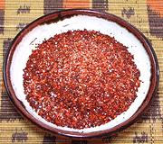

|
Pilipili MasalaEast Africa, Tanzania - Pilipili Masala | ||||
| Makes: Effort: Sched: DoAhead: |
3-1/2 oz * 10 min Yes |
This masala is made two ways: a dry powder, used for sprinkling, and a paste used for barbecue and kebabs and similar. The dry powder uses Citric Acid, and the paste uses Lime Juice. The dry will not quite fill a 4 oz spice jar, the paste will be about 1/2 cup. | |||
|
1/4 1-1/2 2 |
c T t |
Chili Flake (1) Sea Salt Citric Acid -or- (2) |
Make - (5 to 10 min)
|